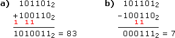
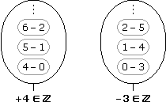
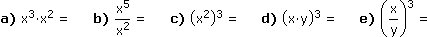
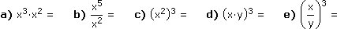

II. ZAHLENLEHRE
A. Natürliche Zahlen
B. Arithmetische Operatoren
C. Teilbarkeit und Primzahlen
D. Ganze Zahlen
E. Rationale Zahlen
F. Operatoreigenschaften
G. Reelle Zahlen
 Ergänzungen und Details
Ergänzungen und DetailsDie natürlichen Zahlen stellen wir uns auf einer Zahlengeraden als Skalenpunkte vor, die in gleichen Abständen rechts vom Nullpunkt weglaufen:
 := { 0, 1, 2, 3, ... } bzw. * := { 1, 2, 3, ... }
:= { 0, 1, 2, 3, ... } bzw. * := { 1, 2, 3, ... }• Eine Zahl heißt kleiner als eine andere, wenn sie auf der Zahlengeraden links davon liegt, und größer, wenn sie rechts davon liegt. Vergleichsoperatoren verknüpfen zwei Zahlen und ergeben einen Wahrheitswert wie folgt:
| Vergleich | ergibt wahr, falls |
| x < y | x kleiner y |
| x ≤ y | x kleiner/gleich y |
| x > y | x größer y |
| x ≥ y | x größer/gleich y |
| x = y | x gleich y |
| x ≠ y | x ungleich y |
Aufgabe 1: Wahr oder falsch?
a) 1 ≤ 3 b) 0 > 1 c) 2 < 2 d) 10 ≥ 10
a) 1 ≤ 3 b) 0 > 1 c) 2 < 2 d) 10 ≥ 10
a) wahr b) falsch c) falsch d) wahr
2 Dezimal- und Dualdarstellung
Jede Zahl hat nur einen Wert (= Position auf der Zahlengeraden), aber unterschiedliche Darstellungen. Dazu nehmen wir "Gewichte", um die Zahl aufzuwiegen. Bei der Dezimaldarstellung sind das 1,10,100,… (10er-Potenzen), bei der Dualdarstellung 1,2,4,… (2er-Potenzen).
Aufgabe 2: Gib die Anzahl der Stunden einer Woche in a) Dezimaldarstellung, b) Dualdarstellung an.
a) 1·100 + 6·10 + 8·1 = 16810
b) 1·128 + 0·64 + 1·32 + 0·16 + 1·8 + 0·4 + 0·2 + 0·1 = 101010002
Um zwei Dualzahlen zu addieren/subtrahieren, gehen wir wie bei Dezimalzahlen vor, d.h. wir schreiben die Zahlen rechtsbündig untereinander und rechnen stellenweise von rechts nach links:
Falls bei der Addition das Ergebnis über 1 hinausschießt, ziehen wir davon 2 ab und addieren dafür eine zusätzliche 1 bei der nächsten Stelle. Bei der Subtraktion schauen wir, wie viel von der unteren Stelle auf die obere fehlt. Allenfalls müssen wir zuvor die obere Stelle um 2 erhöhen, dafür subtrahieren wir dann eine zusätzliche 1 bei der nächsten Stelle.
Aufgabe 3: Berechne a) 45+38, b) 45–38 in Dualdarstellung.

Indem wir Zahlen als Folge von Wahrheitswerten ansehen und das Zusammenrechnen von Zahlen auf logische Operationen zurückführen, könnten wir die Zahlenlehre aus der Logik heraus entwickeln. Wir steigen aber auf einer höheren Stufe ein und kehren zur Vorstellung zurück, dass eine Zahl (grch. arithmós) eine Position auf der Zahlengeraden ist:
Definition der Addition über zwei parallele Zahlengeraden mit gleicher Skala:
Definition der Multiplikation über zwei Zahlengeraden, die sich im Nullpunkt kreuzen:
2 Operatorengebäude
Historisch gesehen gab es zuerst nur die Addition und die weiteren Operatoren (also auch die Multiplikation) wurden unter Rückgriff auf die bereits vorhandenen definiert. Zum einen durch Wiederholung, indem wir dieselbe Zahl mehrmals nehmen und denselben Operator dazwischensetzen. Zum anderen durch Umkehrung, indem wir das Ergebnis und einen Operanden der Originaloperation vorgegeben und nach dem anderen fragen.
• x–y := jene Zahl, die man zu y addieren muss, um x zu erhalten
• x·y := Addition so vieler y's, wie x angibt (0·y := 0)
• x:y := jene Zahl, die man mit y multiplizieren muss, um x zu erhalten (= wie oft man y subtrahieren muss, um von x auf 0 zu kommen)
• yx := Multiplikation so vieler y's, wie x angibt (y0 := 1)
• n√x := jene (Grund)Zahl, auf die man n setzen muss, um x zu erhalten
• logax := jene (Hoch)Zahl, die man auf a setzen muss, um x zu erhalten (= wie oft man durch a dividieren muss, um von x auf 1 zu kommen)
Bem: Der zuerst- bzw. großgeschriebene Operand in der Umkehroperation ist immer das Ergebnis der Originaloperation.
Aufgabe 4: Charakterisiere in Worten:
a) 16–9 b) 24:8 c) 3√125 d) log216
a) 16–9 b) 24:8 c) 3√125 d) log216
a) 16–9 = jene Zahl, die man zu 9 addieren muss, um 16 zu erhalten = 7
b) 24:8 = jene Zahl, die man mit 8 multiplizieren muss, um 24 zu erhalten = 3 (24–8–8–8 = 0)
c) 3√125 = jene Zahl, auf die man 3 setzen muss, um 125 zu erhalten = 5
d) log216 = jene Zahl, die man auf 2 setzen muss, um 16 zu erhalten = 4 (16:2:2:2:2 = 1)
Bezeichungen:
Summand + Summand = Summe
Minuend (der zu Verkleinernde) – Subtrahend (der Abzuziehende) = Differenz
Faktor · Faktor = Produkt
Dividend (der zu Teilende) : Divisor (der Teiler) = Quotient
BasisExponent (= GrundzahlHochzahl) = Potenz
3 Bindungsvereinbarungen
• Wo Klammern fehlen, bestimmt die Stufe der Operatoren die Bindung: Hoch vor Punkt vor Strich. Strich-Strich und Punkt-Punkt binden von links nach rechts, Hoch-Hoch von rechts nach links. Auch Vorzeichen werten wir als (unäre) Strichoperatoren, also etwa
| –x + y |

|
(–x) + y  –(x + y) 
|
oder | –xn |
|
(–x)n –(xn)
|
Aufgabe 5: Ergänze fehlende Klammern so, wie es die Bindungsvereinbarungen vorschreiben:
a) 7 – 4 – 2 + 1 b) 10:2·(1 + 2·3) c) –22 – 5·23
a) 7 – 4 – 2 + 1 b) 10:2·(1 + 2·3) c) –22 – 5·23
a) 7 – 4 – 2 + 1 = [(7 – 4) – 2] + 1
b) 10:2·(1 + 2·3) = (10:2)·[1 + (2·3)]
c) –22 – 5·23 = [–(22)] – [5·(23)]
Nicht jede Division "geht auf", wenn wir vom Dividenden aus in Divisorschritten zur 0 springen. Beispielsweise 7:3 = ???
Offenbar müssen wir schon vor 0 stoppen, um nicht darüber hinauszuschießen. Programmierern sind in dieser Situation zwei Operatoren geläufig:
• Die Ganzzahl-Division sagt, wie oft vor dem Stopp gesprungen wurde, die Modulo-Division, wo dieser Stopp – der sogenannte Rest – liegt.
Aufgabe 6: a) 4201 div 16 =
b) 366952 mod 405 =
c) 76734 mod 98
a) 4201:16 = 262
–32
100
–96
41
–32
9
4201 div 16 = 262
b) 366952:405 = 906
–3645
245
–0
2452
–2430
22
366952 mod 405 = 22
c) 76734:98 = 783
–686
813
–784
294
–294
0
76734 mod 98 = 0
Frage: Wie lässt sich der Dividend x rekonstruieren, wenn wir die Divisionsergebnisse (x div y), (x mod y) und den Divisor y kennen?
(x div y)y + (x mod y) = x
2 Teiler, Vielfache, Primzahlen
• Wenn bei einer Division kein Rest bleibt, nennen wir den Divisor einen Teiler und den Dividenden ein Vielfaches der jeweils anderen Zahl. Eine natürliche Zahl größer 1, die nur 1 und sich selbst als Teiler hat, heißt Primzahl.
= { 2, 3, 5, 7, 11, 13,... }
• Der Hauptsatz der Arithmetik sagt, dass jede natürliche Zahl größer 1 eindeutig in Primfaktoren zerlegbar ist. Dazu dividieren wir sie solange wie möglich durch die kleinste Primzahl, dann durch die nächstgrößere usw. bis 1 herauskommt.
Das hilft uns etwa, um den größten gemeinsamen Teiler oder das kleinste gemeinsame Vielfache mehrerer Zahlen zu bestimmen:
Aufgabe 7: Bestimme a) den ggT, b) das kgV von 540 und 200.
|
a) ggT(540,200) = 22·5 = 20 b) kgV(540,200) = 23·33·52 = 5400 Probe: ggT(x,y)·kgV(x,y) = xy |
Das Problem, dass nicht alle Umkehroperationen ein Ergebnis haben, können wir auch angehen, indem wir neue Zahlen erfinden. In einer abstrakten Vorgehensweise machen wir die ergebnislosen Operationen selbst zu neuen Zahlen, wobei wir aber nicht für dasselbe Ergebnis verschiedene Zahlen erfinden dürfen.
1 Erweiterung von auf
Bei der Subtraktion natürlicher Zahlen ändert sich das Ergebnis nicht, wenn wir bei beiden Operanden dieselbe Zahl addieren/subtrahieren. Derart gleichwertige Subtraktionen werden gebündelt und diese Bündel sind dann die ganzen Zahlen:

Damit die "alten" Subtraktionen jetzt nicht zwei Ergebnisse haben, identifizieren wir die natürlichen Zahlen mit den entsprechenden Plus-Zahlen (

 ). Auf der Zahlengeraden laufen die neu hinzugekommenen Minus-Zahlen links vom Nullpunkt weg:
). Auf der Zahlengeraden laufen die neu hinzugekommenen Minus-Zahlen links vom Nullpunkt weg:2 Betrag, Addition, Multiplikation in
• Der Betrag ist ein unärer Operator, der Zahlen von ihrem Vorzeichen befreit.
| |x| := |
x,x ≥ 0
–x, x < 0
|
Aufgabe 8: a) |–4| =
b) |15| =
c) |0| =
d) wahr oder falsch? |–3| ≠ –3
a) 4 b) 15 c) 0 d) wahr
Nach der Erweiterung des Zahlenbereichs müssen wir die Definition der arithmetischen Operatoren auf die neuen Zahlen ausdehnen. Dazu brauchen wir nur zu verlangen, dass die Eigenschaften der Operatoren erhalten bleiben sollen. Oder wir halten uns an die grafischen Operatordefinitionen, die sich automatisch auf die neuen Zahlen erstrecken:
Addition: (±2) + (±3) = ?
(+2) + (–3) = –1 (–2) + (+3) = +1 (–2) + (–3) = –5
• Bei gleichen Vorzeichen werden die Beträge addiert, bei ungleichen wird der kleinere Betrag vom größeren subtrahiert. Das Ergebnis bekommt das Vorzeichen der betragsgrößeren Zahl.
Multiplikation: (±2)(±3) = ?
(+2)(–3) = –6
(–2)(+3) = –6
(–2)(–3) = +6
• Die Beträge werden multipliziert. Das Ergebnis bekommt bei gleichen Vorzeichen ein Plus, bei ungleichen ein Minus ("Vorzeichenregel").
Bei der Division ganzer Zahlen ändert sich das Ergebnis nicht, wenn wir beide Operanden mit derselben Zahl ≠ 0 multiplizieren/dividieren. Derart gleichwertige Divisionen werden gebündelt und diese Bündel, ausgenommen die Division durch Null, sind dann die rationalen Zahlen:
So dargestellt sprechen wir auch von Bruchzahlen mit dem Zähler über dem Bruchstrich und dem Nenner darunter. Damit die "alten" Divisionen jetzt nicht zwei Ergebnisse haben, identifizieren wir die ganzen Zahlen mit den entsprechenden 1tel-Brüchen (
 ). Auf der Zahlengeraden finden wir Bruchzahlen so:
). Auf der Zahlengeraden finden wir Bruchzahlen so:2 Bruchrechenregeln
• Brüche behalten ihren Wert, wenn man sie erweitert/kürzt, d.h. Zähler und Nenner mit derselben Zahl multipliziert/dividiert.
• Brüche werden addiert/subtrahiert, indem man sie durch Erweitern auf gleiche Nenner bringt und die Zähler addiert/subtrahiert.
• Brüche werden multipliziert, indem man Zähler mit Zähler und Nenner mit Nenner multipliziert.
• Brüche werden dividiert, indem man den ersten mit dem Kehrwert des zweiten multipliziert (Kehrwert = Zähler Nenner).
Aufgabe 9:
• Die Addition ist assoziativ und kommutativ.
• Das neutrale Element der Addition ist 0, durch Vorzeichenwechsel erhält man die inversen Elemente:
x + (–x) = 0
• Damit lässt sich jede Subtraktion als Addition schreiben und umgekehrt:
x – y = x + (–y) und x + y = x – (–y)
2 Eigenschaften der Multiplikation/Division
• Die Multiplikation ist assoziativ, kommutativ und distributiv zur Addition.
• Das neutrale Element der Multiplikation ist 1, durch Kehrwertbildung erhält man die inversen Elemente:
x· = 1
1
x
• Damit lässt sich jede Division als Multiplikation schreiben und umgekehrt:
x:y = x· und x·y = x:
1
y
1
y
3 Potenzrechenregeln
• Potenzen mit gleicher Basis werden multipliziert/dividiert, indem man die Exponenten addiert/subtrahiert.
xmxn = xm+n und
xm
xn
• Eine Potenz wird potenziert, indem man die Exponenten multipliziert.
(xm)n = xmn
• Ein Produkt/Quotient wird potenziert, indem man den Exponenten auf beide Operanden verteilt.
(xy)n = xnyn und
Aufgabe 10: Berechne über die Potenzdefinition und überprüfe damit die Potenzrechenregeln:


a) x3·x2 = (x·x·x)(x·x) = x·x·x·x·x = x5
c) (x2)3 = (x·x)(x·x)(x·x) = x·x·x·x·x·x = x6
d) (x·y)3 = (x·y)(x·y)(x·y) = x·x·x·y·y·y = x3·y3
4 Erweiterte Potenzdefinition
Wenn die Potenzrechenregeln erhalten bleiben sollen, gibt es nur eine Möglichkeit, die Potenzdefinition auf neue Exponenten zu erweitern:

durchgekürzt
Aufgabe 11: a) 100 =
b) 5–2 =
c) 912 =
d) 823 =
a) 100 = 1 b) 5–2 =
1
52
1
25
innerhalb einer Rechnung steht die Quadratwurzel für die Plus-Zahl
Effizientes Rechnen verlangt, dass wir uns neben der Definition auch das Ergebnis häufig vorkommender Rechenschritte merken. Beispielsweise, dass wir einen Faktor-mit-Exponent auf die andere Seite des Bruchstrichs schieben können, indem wir beim Exponenten das Vorzeichen wechseln:
Dass es keine rationale Zahl gibt, die etwa √2 ist, zeigen wir über einen indirekten Beweis. Dabei nehmen wir die Verneinung von dem an, was wir zeigen wollen, und folgern solange, bis wir auf etwas Falsches stoßen:
Annahme: √2 = durchgekürzt mit m, n 
m
n
√2 = (.)2
m
n
2 = ·n2
m2
n2
Wie sich leicht nachprüfen lässt, ist das Quadrat gerader Zahlen gerade und das Quadrat ungerader Zahlen ungerade, also:
2n2 = m2
 m2 gerade m gerade
m2 gerade m geradem
2
2n2 = 4k2 :2
n2 = 2k2 n2 gerade n gerade = Widerspruch dazu, dass durchgekürzt ist
n2 gerade n gerade = Widerspruch dazu, dass m
n
Was wir mit rationalen Zahlen sehr wohl können, ist, beliebig nahe an die √2 heranspringen. Etwa in Form einer dezimalen Sprungfolge, bei der wir soviel Einer, dann Zehntel usw. addieren, dass das jeweilige Quadrat gerade noch unter 2 bleibt. Gleichwertige Sprungfolgen in dem Sinn, dass der Abstand zwischen ihren n-ten Sprungstellen beliebig klein wird, werden gebündelt und diese Bündel sind dann die reellen Zahlen:
So dargestellt sprechen wir auch von Dezimalzahlen (mit Komma). Dezimalzahlen, bei denen sich eine bestimmte Ziffernfolge endlos wiederholt, heißen periodisch. Das sind gerade die rationalen Zahlen (
).
Aufgabe 12: Stelle 2,437 als Bruchzahl dar.
x =
241,3
99
2413
990
Bem: Die arithmetischen Operatoren werden auf reelle Zahlen ausgedehnt, indem wir die rationalen Folgen dahinter gliedweise zusammenrechnen.
2 Gleitkommazahlen
Bei der Gleitkommadarstellung wird eine Zehnerpotenz als Faktor angehängt, sodass die Ziffer vor dem Komma für diese Zehnerpotenz steht und nicht mehr für Einer (= Festkommadarstellung).
Aufgabe 13: Schreibe als Festkommzahl:
a) 2,705·102 b) 9,4·10–3 c) –1,59·101 d) 3,22651·104
a) 2,705·102 b) 9,4·10–3 c) –1,59·101 d) 3,22651·104
a) 2,705·102 = 270,5 b) 9,4·10–3 = 0,0094 c) –1,59·101 = –15,9 d) 3,22651·104 = 32265,15
Eine Gleitkommazahl heißt normalisiert, wenn das Komma hinter der ersten Ziffer ≠ 0 sitzt.
Aufgabe 14: Schreibe als normalisierte Gleitkommazahl:
a) 491100 b) –78,44 c) 0,83 d) –0,0006
a) 491100 b) –78,44 c) 0,83 d) –0,0006
a) 491100 = 4,911·105 b) –78,44 = –7,844·101 c) 0,83 = 8,3·10–1 d) –0,0006 = –6·10–4
3 Runden
Um auf eine bestimmte Zehnerpotenz zu runden, denken wir uns, dass die Vielfachen dieser Zehnerpotenz eine Skala auf der Zahlengeraden bilden. Zahlen auf Skalenpunkten bleiben wie sie sind, Zahlen dazwischen ersetzen wir durch den nächstgelegenen Skalenpunkt und im Fall, dass das nicht entscheidbar ist (weil die Zahl genau in der Mitte liegt), runden wir von 0 weg.
Aufgabe 15: Runde auf
a) 100tel: 7,395 b) 1000er: –18500 c) 10tel: –6,245 d) 10er: 203,9
a) 100tel: 7,395 b) 1000er: –18500 c) 10tel: –6,245 d) 10er: 203,9
a) 7,39
 5 ≈ 7,40
b) –18500 ≈ –19000
c) –6,245 ≈ –6,2
d) 203,9 ≈ 200
5 ≈ 7,40
b) –18500 ≈ –19000
c) –6,245 ≈ –6,2
d) 203,9 ≈ 2004 Intervalle
• Ein abgeschlossenes Intervall ist ein zusammenhängender Teil der reellen Zahlengeraden mitsamt den beiden Endpunkten:
[a, b] := { x

 | a ≤ x ≤ b }
| a ≤ x ≤ b }• Ein offenes Intervall ist ein zusammenhängender Teil der reellen Zahlengeraden ohne die beiden Endpunkte (die auch ±∞ sein können):
]a, b[ := { x
| a < x < b }Intervalle, die auf einer Seite abgeschlossen und auf der anderen Seite offen sind, werden dementsprechend so geschrieben:
[a, b[ := { x
| a ≤ x < b } bzw. ]a, b] := { x | a < x ≤ b }Bem: Für (halb)offene Intervalle werden auch runde Klammern verwendet, also (a, b), [a, b) bzw. (a, b].
Aufgabe 16: Stelle A = [–1, 6], B = ]–∞, –1[, C = ]2, 8] auf der Zahlengeraden dar und bestimme
a) A B =
b) A C =
c) \B =
B =
b) A C =
c) \B =
a) A
B =
b) A C =
c) \B =a) A
B = ]–∞, 6]
b) A C = ]2, 6]
c) \B = [–1, ∞[